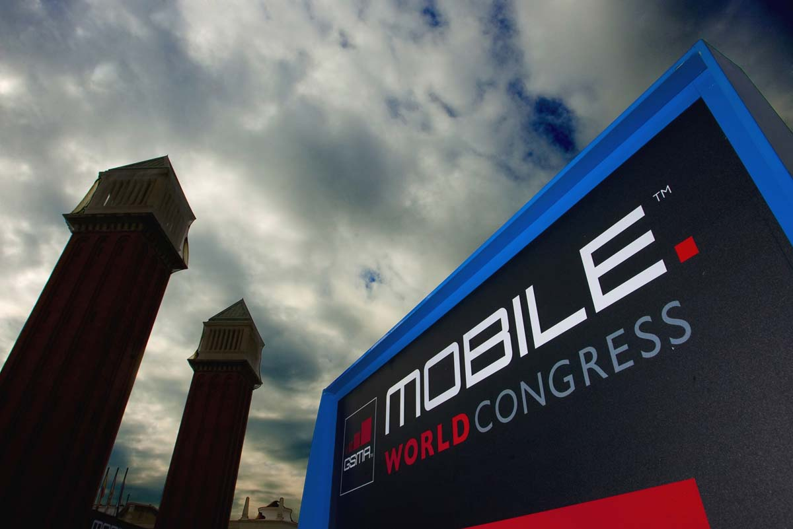

Raona en el Mobile World Congress 21

Joan Llopart, Director de Proyectos en Raona, nos trae las novedades del MWC14 celebrado en Barcelona.
Un evento a nivel mundial con más de 75.000 asistentes en el que se han dado cita más de 1800 empresas de todo el mundo y en el que se han presentado las últimas innovaciones tecnológicas que Raona pudo conocer gracias a la invitación oficial por parte de Microsoft a su presentación. Una presentación en la que dio a conocer algunas de las novedades de Windows8 y Windows Phone que se lanzarán en los próximos años y que aportarán interesantes evoluciones a estas plataformas.
Por otro lado, los móviles resistes al agua, las phablets, el Internet de las cosas, nuevas tecnologías y nuevos sistemas operativos fueron algunas de las novedades tecnológicas presentadas en el Mobile World Congress. Sin embargo, fueron los “wereables” y el Internet para todos las más destacadas.
Los “wereables” o dispositivos para llevar puestos han sido el punto clave de esta edición del Mobile World Congress. Los relojes o pulseras inteligentes así como las ya famosas Google Glass que podremos conectar con nuestros teléfonos móviles serán la gran tendencia de este año.
El Internet para todos
La presencia del fundador de Facebook, Marc Zuckerberg , ha sido sin duda el gran acontecimiento de esta edición.
Zuckerberg, que previamente al evento, había anunciado ya la compra de Whatsapp, habló sobre los beneficios de esta adquisición y algunas de las novedades que se incluirán, tales como las llamadas de voz y presentó en primicia Internet.org, un proyecto solidario cuya máxima es el “Internet para todos” .